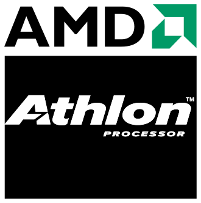

By Khizar Asim
ka364@student.le.ac.uk
The AMD Athlon was released in 1999, it was a complete commercial success as it was the fastest x86 cpu at the time. It was marked the first CPU to provide 1.0 ghz [1]. The Athlon was a direct competitor of Pentium III as it was also a processor boasting a speed of 1 ghz [1]. The Athlon was equipped with a powerful FPU which surpassed the Intel competing processors[3]. At launch the AMD Athlon is said to be 10% faster than Pentium III for business applications. The AMD Athlon "Classic" was an important processor in the history of AMD processors. However good it was at the time, it didn't come without issues. [4]
The AMD Athlon was deeply pipelined meaning it was meant for higher clock speeds and on top of that a triple issue pipelined x87 FPU. The processor had 22 million transistors and a six layered metal architecture. It had three generalized CISC to RISC decoders and a nine issue RISC core. But the most important thing it was marketed on was 3DNow! as the Athlon was 20% faster in gaming performance when compared to Pentium III of the same clock. The 3DNow! improved the performance of many graphic-intensive applications because of it's vector processing. [2]
The major problem with Athlon was the cache design, the cache ran half the system clock and sometimes 1/3 a system clock. It couldn't be scaled any higher and because of that even the faster Athlons were behind Pentium III. It was a huge bottleneck and AMD was aware of the problem. Another problem was that AMD wasn't the most popular CPU brand out there and because of previous mishaps the company didn't have the best popularity. There were mixed reviews. Followed by AMD Athlon "Classic", came its successor K75 chip which was also a Athlon variant but without the cache problem. [1]
1 - http://hw-museum.cz/article/6/cpu-history-tour--1999---2001-/4
2 - https://web.archive.org/web/20011225163156/http://aceshardware.com/read.jsp?id=71
3 - https://www.tomshardware.com/picturestory/713-amd-cpu-history-2.html
4 - https://www.anandtech.com/show/355/3
ka364©
Go up